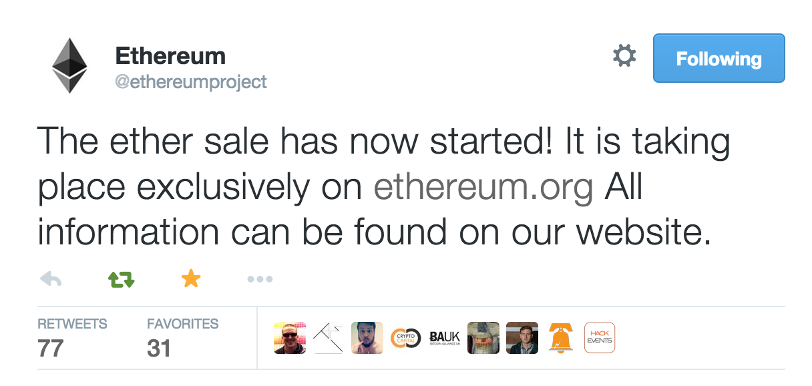
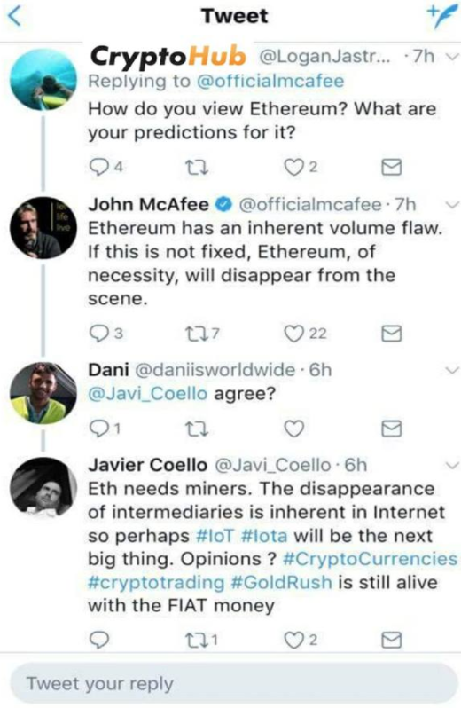

Draden was invited to collaborate on a Ethereum Auto Trader project in March 2018. The algorithm uses Twitter Inc. sentiment in predicting the ethereum price the next hour and posting to twitter the predictions. It uses a model that is fed data from the past month of ethereum's price and the emotions towards ethereum throughout the month to predict the price. The project is still heavily in the works, and has had success as high as 70 percent in predicting whether or not the price will rise or drop the next hour. Draden will continue working on this project in the upcoming months.
 